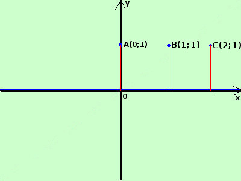

|
sviluppo tracciare il grafico della seguente funzione
 invece di un impulso solo stavolta ne abbiamo infiniti in corrispondenza con l'insieme dei numeri naturali Ne punti dove sssume valore 1 la funzione e' discontinua la funzione e' composta da una retta orizzontale che in questo caso coincide con l'asse x e da un insieme isomorfo all'insieme N in blu il risultato finale |